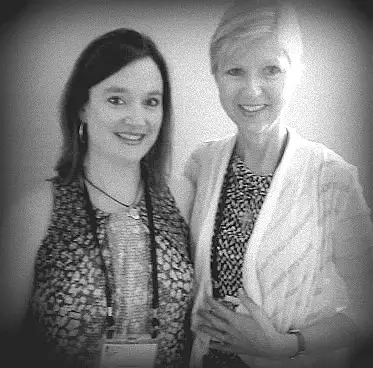

I am finding it more and more difficult these days to carve out adequate time for indulging in my longtime passion of reading. But Donna-Marie Cooper O’Boyle’s memoir, “The Kiss of Jesus,” had me blissfully rediscovering the delights of sneaking a flashlight and book under the covers each night, and staying up to the wee hours, quietly turning pages while my husband snored nearby.
For when you have a jewel that shimmers in your hands, the thought of it collecting dust becomes quickly dismantled, and “where there’s a will there’s a way” makes room.
It doesn’t hurt that Donna-Marie is a personal friend, and that memoir happens to be my favorite genre. Through that friendship, I knew this book was percolating a while before it came to light. In fact, Donna-Marie and I met in person for the first time, after a years-long online friendship, at a conference where she was set about the task of setting her memoir in motion.
{kind=link}

At the time of that gathering, I’d just secured a contract for the memoir I’d co-written, “Redeemed by Grace,” also published by Ignatius Press. So Donna-Marie and I were on nearly parallel journeys with our books, these flowers we’d been tending and were now preparing for bloom. Having prayed for the success of her book as she did mine, I was invested spiritually, but still unaware of the depth of the treasure that awaited.
So it was with great joy that her book finally came into my hands. I knew part of Donna-Marie’s story from personal sharing. I knew that she’d been through a great deal. And I have been blessed to be on the receiving end of Donna-Marie’s mentoring heart. Over the years, we’ve exchanged stories of heartache regarding our journeys, shared concerns, and swapped many prayers.
But we never know all we can know about a person, and I knew that in opening Donna-Marie’s memoir, I was about to go deeper into the heart of my friend.
As I moved through the difficult history that unfolded, my heart lurched. I texted her in those early chapters, feeling her pain as if fresh. “I’m so sorry you’ve been through all that,” I said. As a friend, I couldn’t help wishing I had been there in those hard moments to console her in some way. She responded that she was blessed in that now, having brought her story to light, she can use those crosses to help others.
But the book does not end with its tragic details, because even as Donna-Marie brings us into the center of her consternation, we watch the journey of a soul unfold; a soul that, though wounded, has been gripped by the love of God, swept off its feet by the tantalizing tenderness of our Lord, who is, at the same time, a jealous God who will do anything to have us in his embrace.
This past Sunday, our priest gave a homily that had me weeping in the back of the church. It could be summed up thus: “God will be as brazen as he needs to be to get our attention. That’s how important our salvation is to him.”
God has been brazen in the life of Donna-Marie Cooper O’Boyle, allowing all manner of suffering. Reading of it can be heartbreaking in moments. And yet, through the sharing of these hardships, we see hope. We remember that all saints have passed through great difficulty in order to be pruned enough to stand in the light of Christ.
Donna-Marie has been pruned in a most thorough manner and stands as a living testimony of God’s love, an example of what we must sometimes endure on our way to sanctification.
Along with her personal story, Donna-Marie weaves in beautiful strands of details from encounters with strangers she’s met along the way; people who have been, in rather unexpected ways, changed by her simple, humble witness. In addition, her expounding on her precious friendship with Mother Teresa and the advice she gave a struggling mother are a gain for us all.
I finished this book in the wee hours. Closing its covers, I closed my eyes and absorbed the gift that was given through the soul-sharing that had led me more deeply into the life story of my friend and the heart of Christ. For many days afterward, I have found myself affected by the witness of the loving hand of God in her life, and inspired to continue being tenacious in my own pursuit of God, and of souls for him.
{kind=link}
Donna-Marie’s “The Kiss of Jesus” was to me a kiss from Jesus. It’s a book I will be heartily recommending for a long time to come.